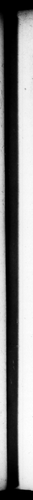

TIB. NERO CESAR ns, ſemel triremi uſque 20 proximos Na umachiæ Abr tos ſubvectus eſt 1 diſpoſita ſtatione per ripas Tiberis, quæ obviam prodeuntes {u!; moveret. Iterum Appia uſque ad imum la idem, fed pro— modo — aditis urbis mœnibus rediit. Primo incertum qua de cauſa, poſtea oſtento territus. Erat ei in ohlectamentis ſerpens draco, uem ex conſuetud ine manu ua cibaturus, cum conſump. tum à formicis inveniſſet, monitus eſt ut vim multitudinis caveret. Rediens ergo propere Campaniam Aſture in Eangnorem incidit, Quo paullum levatus, Circeios perrendir, Ac ne quam ſulpicionem infirmitatis daret, caſtreaſibus ludis non interfuit ſolum, ſed etiam miſſum in narenam aprum jaculis deſuper petiit : ſtatimque latere convulſo, &, ut exæſtuarat afflatus aura, in graviorem recidit morbum. Suſtentavit tamen aliquamdin, quamvis Miſenum uſque dey 5 nhil ex ordine quotidiano petermitteret, ne convivia qui dem ac cæteras voluptates, artim intemperantia, partim inn mulatlonl- Ne Chariclem medicum, quod commeatu abfuturus è convivio egrediens, manum ſibi oſculandi cauſa apprehendiſſet, exiſtimans tentatas ab eo venas ſibi, remanere ac recumbere hortatus eſt, cœnamque protraxit. Nec abſtinuit conſuetudine, quin tune quoque inſtans in medio triclinio, adſtante lictore, ſingulos valere dicentes appellaret. load uh in the middle of the took leave of every one in the 73. Interim cum in actis legilſer, dimiſſos ac ne auditos quidem quoſdam reos, de Qui» bus ſtrictim, & nihil aud 2 nominatos ab indice dripſerat, pro contempto ſe room, with an offiter attending, and company by A peruſal of the a#s of t to Rome, once he came ih # trireme 4 far as the" gardens near the Naumachia, ut placed g nards ah the Tiber, to ktep of all that ſhield fer to came to meet him. And a ſecond time he advanced along the Appian way, within ſeven miles of the town ; | | bus akin only a vie of the walls a2 a diſtance, he return d withour coming any nearer. For what reuſon be came not up to the town the fi tain, in the latter deterred yert him ing to — — W _ a „ He uſed to di. el . whom with his own hand accortlF | e by ants, and was => ed to have a care of the rhe mob, W re returning in all haſt to Campania, be fell ill t Aſtura, but being ſomething went on to Cerceii. And to void gi vin any ſuſpicion of biz being out of or der, be was wot only | an eminence encounter 4 wil boar, let one for the oſe, with a» velins. And immediarc being #4 with 4 conynlſion in his Fo, ant catching cold too upon his over heating himſelf in the exerciſe, he relaps to 4 worſe condition than he was at ri. However he held out for ſome time; and ſailing as far as Miſete, omitted in his uſual manner of life, not ſo much as bis entertainments and other pleaſures, partly from an unyovernable appetite, and to conceal his condition. For Charictes a phyſscian, having obtained leave to retire ſome time from Court, at bis riſing from table, ſeia d his hand to kiſs it 3 upon which be ſuppoſing he did it to feel his pulſe, deſired him to fy and take his place again, and thereion conti the entertainment Long er than wſual. And After all according to his conſtant prattice, be name. 73. In the mean time vpn b; ſenave, that ecution had ſome perſons under been diſcharged brought to a hearing, concerning whom be had writ bus very briefly, and no | habitum 165 | the banks of is Wircerpreſent at the di. verſtons of the camp, but did himſelf „ Without being
